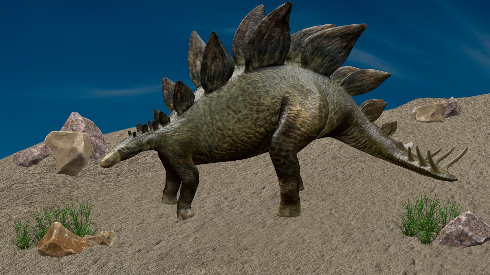

3D реконструкция взрослой особи
Стегозавр
Стегозавры обитали в Якутии в начале Мелового периода. В рацион входили папоротники, хвощи и другие растения того времени. У этих гигантов было два ряда шипов, которыми они защищались от хищников. В результате экспедиций были найдены многочисленные фрагменты шипов, зубов и других костей стегозавра.
Зубы молодых особей
Хвостовой шип взрослой особи